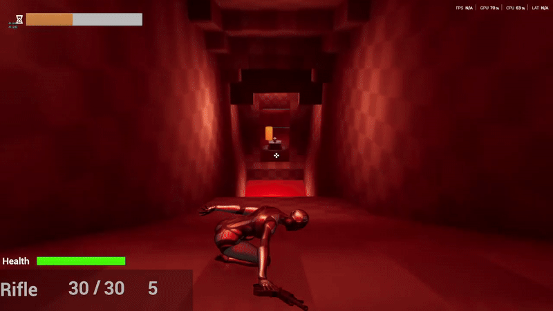

UE5 Demo Game (Level Design and Mechanics)
BackBy far this was my most detailed and complex project. It was part of a major University course covering Game Mechanics and Level Design. For this project we were tasked in creating a small "Demo" type game which had to include 4 major features. These were the following:
- A major movement mechanic
- A major projectile mechanic
- A major AI NPC (Friendly or Aggresive)
- A block out Level Design
Using these requirements, I decided to create a gameplay experience that took heavy inspiration for Destiny 2 and Doom. The gameplay thus designed to be fast, fluid and powerful making the player feel in full control as the rampage through the level.
TThe first major implementation I wanted to add was a Gun system to act as the projectile requirement. The product of this was a full gun system with Ammo economy, reloading, and a full weapon switching system consisting of unarmed, primary, secondary and heavy. The projectiles initially were hit scan using line trace; however, I converted it to physical bullets and explosions to make the experience more immersive. Using this system, I added 3 weapon types that filled each slot that would be picked up throughout the level.
The second major implementation was the movement mechanic. I decided to add 2 these being a dash type move to propel the player directionally, and a slide that would be reactive to terrain steepness. These movement mechanics allowed for fast and fluid movement throughout the level and allowed unique encounters to be added to the level design.
The third major implementation was the AI, which I simply decided to add enemy AI that would react and engage the player based on vision. I created two of the AI's each having a different engagement with the player. The first was a melee AI that would run at the player and use a melee attack that would differ animation with the hitbox translating to the attack. This giving the player opportunities to dodge. The second was a ranged AI that would shoot at the player with a projectile and would stand at a distance from the player forcing the player to close distance.
The final major implementation was the level design. I designed the level to be a progressing dungeon type level taking inspiration from Destiny 2's lost sector design. The level was designed to be a linear progression with the player moving through the level, encountering enemies and obstacles, and finally reaching the end of the level. The level was split into major sections that were designed around the movement mechanics and the weapons the player had available.
I did also add a level of different synergy between the mechanics, such as the dash being paired with jumping out of slide giving the player a boost of speed, or the heavy type weapons having ammo that launched the player when it impacted near them.
Overall, this project was a major test of my skills in Unreal Engine 5, and I learned a lot about the engine and how to use it effectively. The project also taught me a lot about level design and how to create engaging gameplay experiences. I am very proud of the final product, and I believe it is one of my best works to date. Though I still feel a range of improvements could have been made. One of note being the AI feeling very robotic and buggy, which would need a range of improvements added to its behavioural tree.
I definitely feel I wrote too much here but hey, I had fun.
